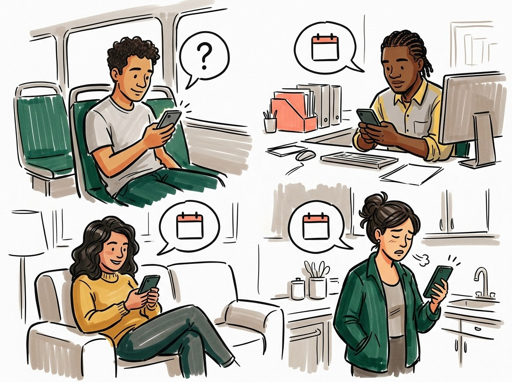
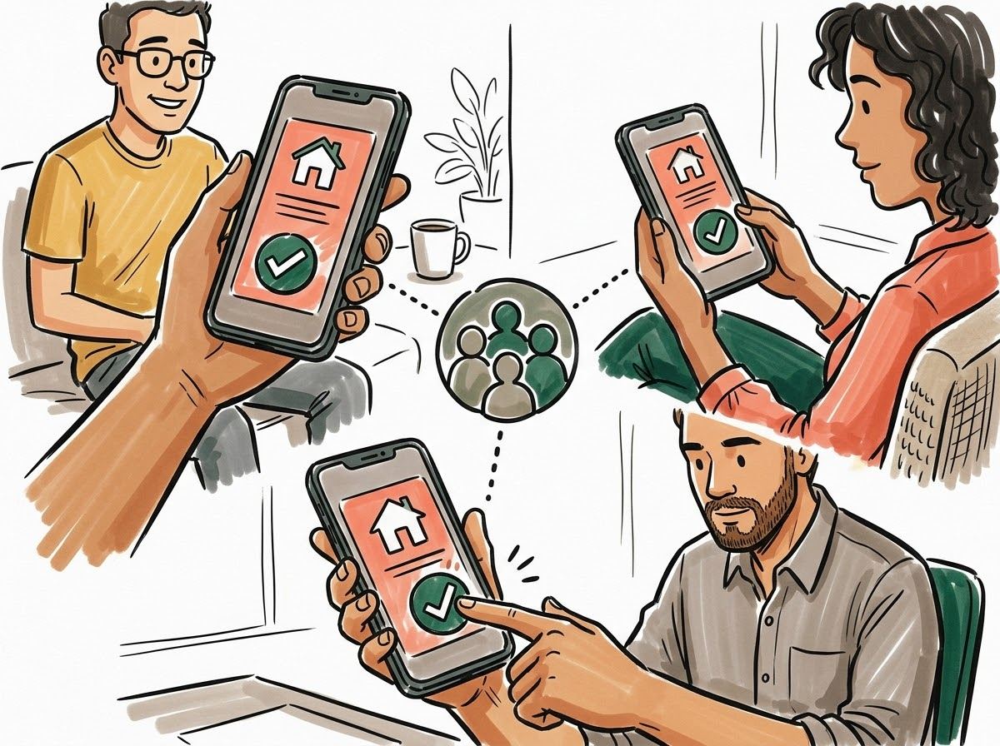
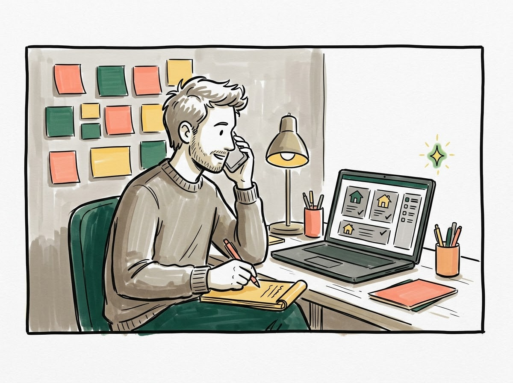
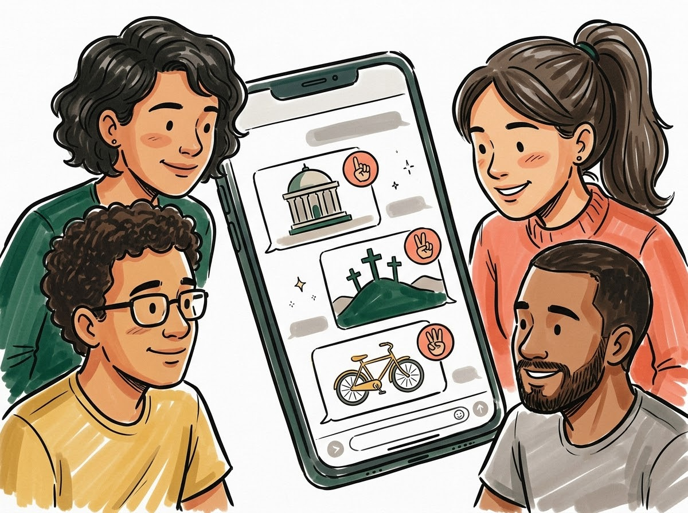
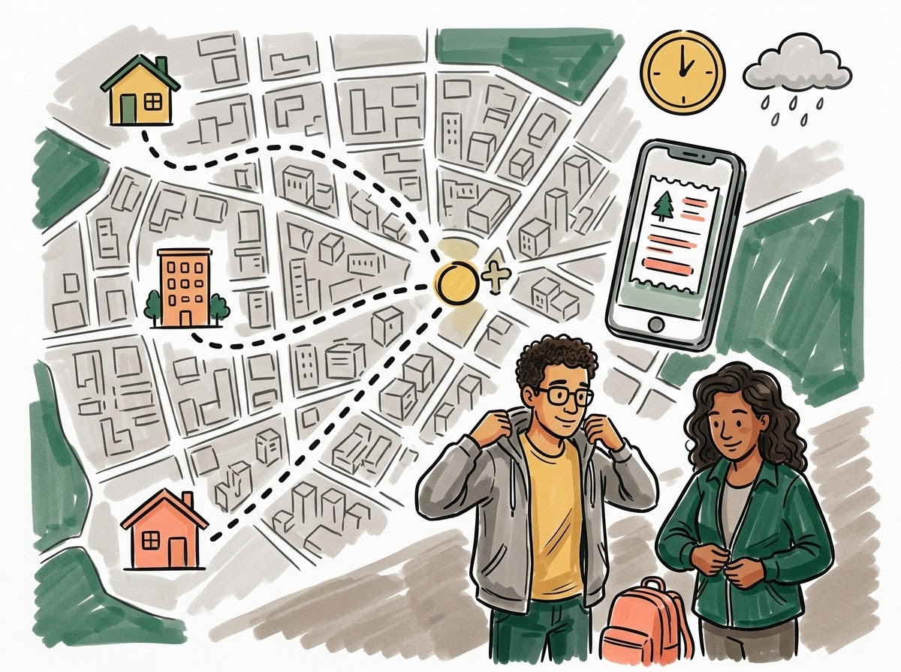
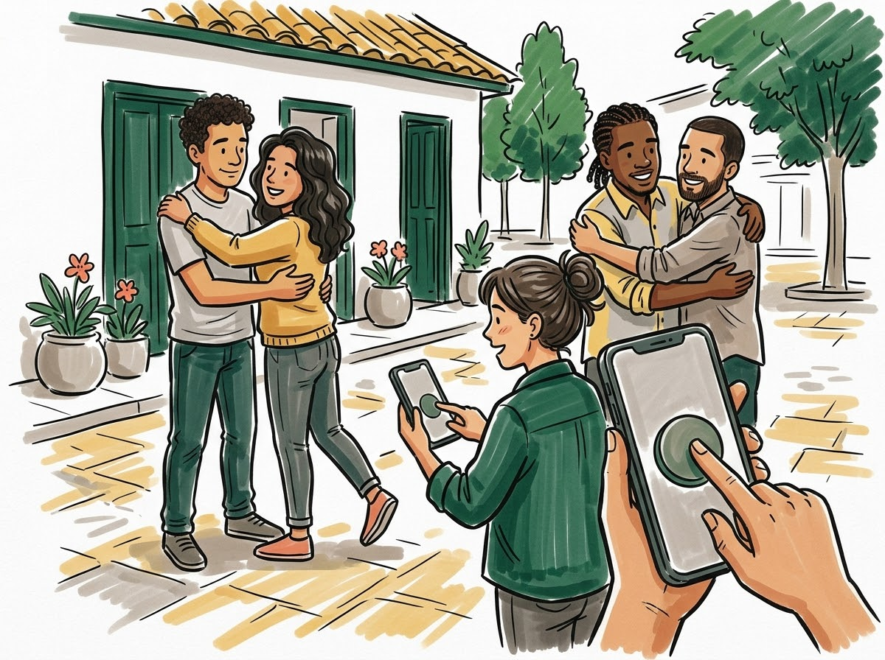
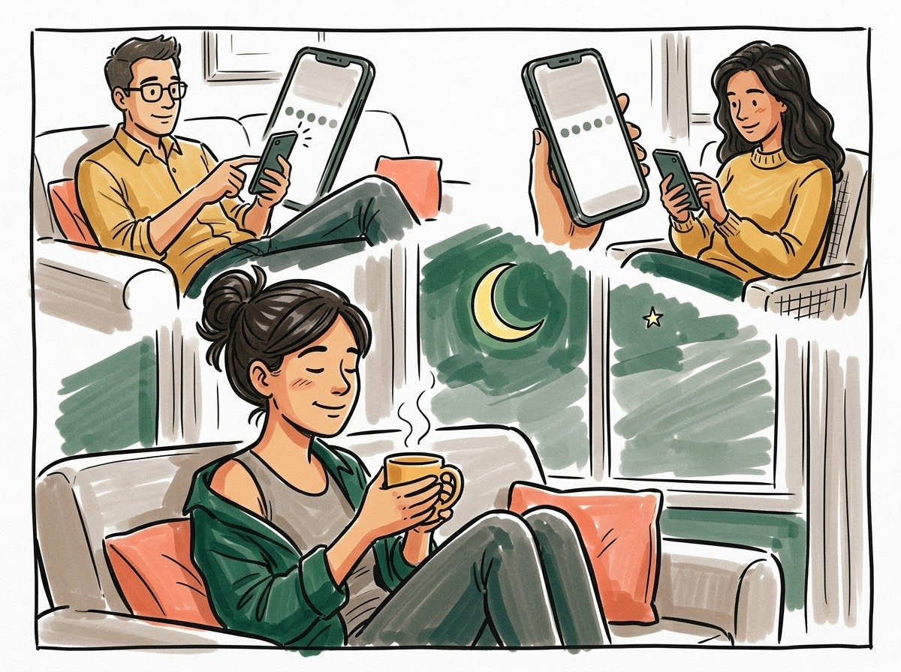

Cada semana, un plan muere en el chat.
96%
dice que de 5 planes, 2 o menos pasan
89 %
muere al buscar fecha y horaEncuesta propia · n = 76 · vista parcial Actualizar n final
Maestría en Gestión de la Innovación · Icesi
Las ganas están. El plan nunca llega.
dice que de 5 planes, 2 o menos pasan
Encuesta propia · n = 76 · vista parcial Actualizar n final
Dentro del chat que ya usan.
Encuesta propia · n = 76 · vista parcial
Cali · DANE (proyección 2026, por verificar) · Infobip 2026 · encuesta propia · SOM y precio: hipótesis







Resultados al cierre del piloto · Dato pendiente
Hoy2 de 5
Con SintoníaDato pendiente